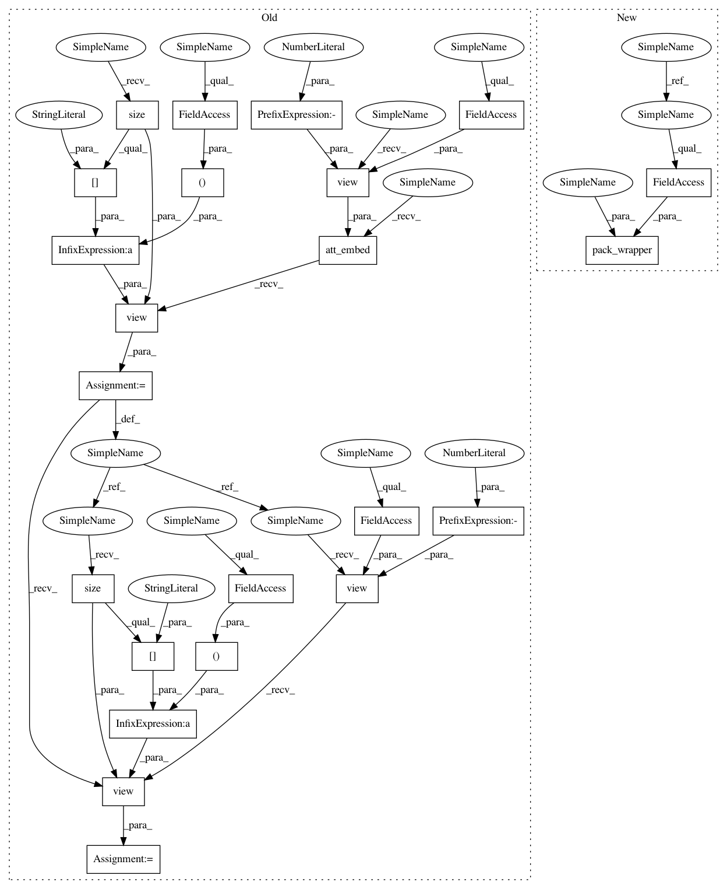

d1f352a71ba7056a4dc3adb6698e0e792d78b0b2,models/AttModel.py,AttModel,_sample,#AttModel#Any#Any#Any#Any#,156
Before Change
// embed fc and att feats
fc_feats = self.fc_embed(fc_feats)
_att_feats = self.att_embed(att_feats.view(-1, self.att_feat_size))
att_feats = _att_feats.view(*(att_feats.size()[:-1] + (self.rnn_size,)))
// Project the attention feats first to reduce memory and computation comsumptions.
p_att_feats = self.ctx2att(att_feats.view(-1, self.rnn_size))
p_att_feats = p_att_feats.view(*(att_feats.size()[:-1] + (self.att_hid_size,)))
// seq = []
// seqLogprobs = []
seq = Variable(fc_feats.data.new(batch_size, self.seq_length).long().zero_())
After Change
// return the samples and their log likelihoods
return Variable(seq.transpose(0, 1)), Variable(seqLogprobs.transpose(0, 1))
def _sample(self, fc_feats, att_feats, att_masks=None, opt={}):
sample_max = opt.get("sample_max", 1)
beam_size = opt.get("beam_size", 1)
temperature = opt.get("temperature", 1.0)
decoding_constraint = opt.get("decoding_constraint", 0)
if beam_size > 1:
return self._sample_beam(fc_feats, att_feats, att_masks, opt)
batch_size = fc_feats.size(0)
state = self.init_hidden(batch_size)
// embed fc and att feats
fc_feats = self.fc_embed(fc_feats)
att_feats = pack_wrapper(self.att_embed, att_feats, att_masks)
// Project the attention feats first to reduce memory and computation comsumptions.
p_att_feats = self.ctx2att(att_feats)
In pattern: SUPERPATTERN
Frequency: 6
Non-data size: 23
Instances
Project Name: ruotianluo/self-critical.pytorch
Commit Name: d1f352a71ba7056a4dc3adb6698e0e792d78b0b2
Time: 2017-11-13
Author: rluo@ttic.edu
File Name: models/AttModel.py
Class Name: AttModel
Method Name: _sample
Project Name: ruotianluo/self-critical.pytorch
Commit Name: d1f352a71ba7056a4dc3adb6698e0e792d78b0b2
Time: 2017-11-13
Author: rluo@ttic.edu
File Name: models/AttModel.py
Class Name: AttModel
Method Name: _sample_beam
Project Name: ruotianluo/self-critical.pytorch
Commit Name: d1f352a71ba7056a4dc3adb6698e0e792d78b0b2
Time: 2017-11-13
Author: rluo@ttic.edu
File Name: models/AttModel.py
Class Name: AttModel
Method Name: _forward
Project Name: ruotianluo/self-critical.pytorch
Commit Name: d1f352a71ba7056a4dc3adb6698e0e792d78b0b2
Time: 2017-11-13
Author: rluo@ttic.edu
File Name: models/AttModel.py
Class Name: AttModel
Method Name: _sample